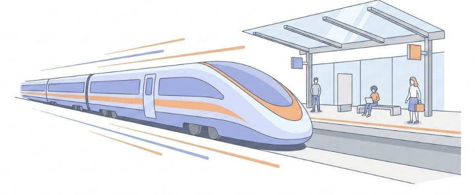
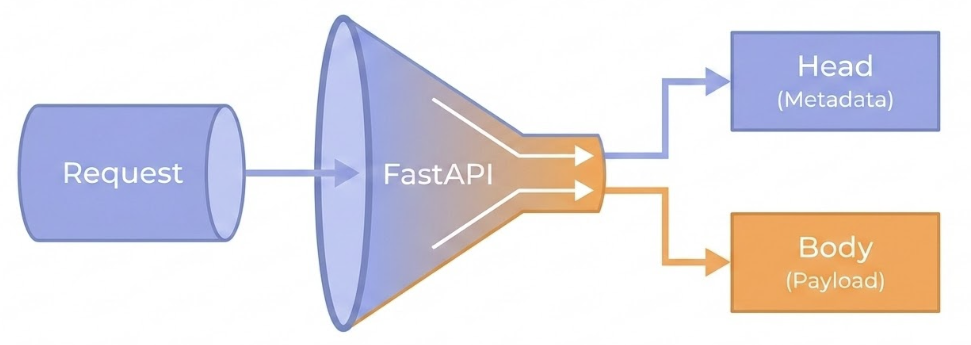
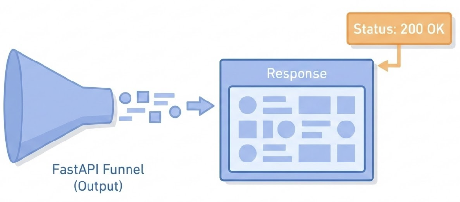
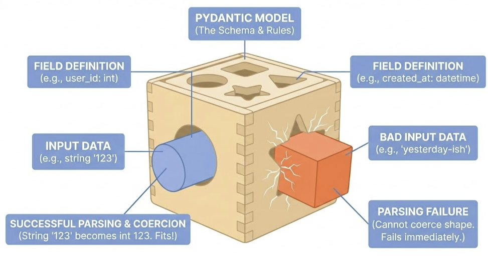

Introduction to FastAPI
Session 1: Core Objects
Figure: A sleek, futuristic high-speed train or hyperloop pod arriving at a platform. The platform is clean and modern. With speed lines indicating high performance.
- The
FastAPIclass - The
requestclass - The Request Parameters:
from fastapi import Body, Cookie, File, Form, Header, Path, Query - The
responseclass - The
Custom Response Classes - The
APIRouterclass
1. The FastAPI Class
The FastAPI class is the main entry point for your application. It inherits from Starlette and acts as the central hub where you:
- Register routes using decorators like
@app.get(),@app.post(), ..etc. - Configure global settings like exception handlers (404, 500, ..etc.).
- Manage lifecycles: events such as: startup and shutdown
2. The Request Class
Figure: A diagram showing the flow of an HTTP request. A data packet labeled ‘Request’ enters a funnel labeled ‘FastAPI’. The funnel splits the packet into ‘Head’ (Metadata) and ‘Body’ (Payload).
The Request class provides direct access to the underlying HTTP request. This is useful when you need to access:
- The client’s IP address.
- Raw Headers or Cookies.
- The request Body as a raw stream.
3. Request Parameters
These are the special functions that you can put in path operation function parameters or dependency functions with Annotated to get data from the request.
Path&Query: For values in the URL or query string.Body,Form, &File: For data, form fields, or files sent in the request payload.Header&Cookie: For extracting metadata from the request.
4. The Response Class
Figure: A diagram showing the output of the FastAPI funnel. Data comes out and is packaged into a box labeled ‘Response’. A label is being attached to the box that says ‘Status: 200 OK’.
You can declare a parameter in a path operation function or dependency to be of type Response and then you can set data for the response like headers or cookies.
- Set custom HTTP status codes (e.g.,
201 Created). - Add custom headers or set cookies.
- Return different types of content, such as JSON, HTML, or plain text.
5. Custom Response Classes
Read more about it in the FastAPI docs for Custom Response - HTML, Stream, File, others.
Status Codes
It contains a group of named constants (variables) with integer status codes. For example:
- 200:
status.HTTP_200_OK - 403:
status.HTTP_403_FORBIDDEN - etc.
Read more about it in the FastAPI docs about Response Status Code.
6. The APIRouter Class
Group path operations, for example to structure an app in multiple files: routers/items.py and routers/users.py:
.
├── app
│ ├── __init__.py
│ ├── main.py
│ └── routers
│ │ ├── __init__.py
│ │ ├── items.py
│ │ └── users.pyRead more about it in the FastAPI docs for Bigger Applications - Multiple Files.
Running FastAPI: Development
To start your API in development mode, use the command:
- Mode: Development
- Auto-reload: Enabled (Server restarts when code changes).
- Host:
127.0.0.1(Localhost). - Warning: This mode is resource-intensive and less stable. Do not use in production.
Running FastAPI: Production
To start your API in production mode, use the command:
- Mode: Production
- Auto-reload: Disabled (Stable, maximizing performance).
- Host:
0.0.0.0(Listen on all available IP addresses). - Termination Proxy: Typically runs behind an HTTPS proxy (like Nginx or a Load Balancer).
FastAPI: Standing on Giants
FastAPI is not built from scratch. It creates a powerful synergy by combining two best-in-class libraries:
- Starlette: For the web parts.
- Pydantic: For the data parts.
Starlette: The Web Engine
Starlette provides the underlying web capabilities:
- Asynchronous Core: Built on
anyio, allowing for high concurrency (dealing with many users at once). - WebSockets: Native support for real-time bi-directional communication.
Pydantic: The Data Enforcer
Pydantic provides the data validation and serialization:
Figure: the BaseModel
- Enforces that input data matches your defined types:
"123"\(\rightarrow\)123 - Written in Rust (v2), making it one of the fastest validators available.
- It also draws the map (OpenAPI/Swagger UI) based on your Python code.
Key Takeaways
- FastAPI Class: The central hub for routing, configuration, and application lifecycle.
- Request & Response: Use
Requestfor raw access to headers/IPs andResponseto manually control status codes and cookies. - Modular Routing:
APIRouterallows you to split large applications into manageable, logical files. - Dev vs. Prod:
fastapi devenables auto-reload for local iteration;fastapi runoptimizes for performance and security in production. - The “Giants”: FastAPI combines Starlette (for high-concurrency async performance) and Pydantic (for strict, automated data validation and documentation).
Session 2: Syntax and Semantics
Decorators: The @ Symbol
A Decorator is a function that takes another function and extends its behavior without explicitly modifying it.
In FastAPI: The @app.get decorator tells FastAPI: “Take the function below (get_items) and register it in the Routing Table for the path /items.”
Type Hints Matter
Type hints are the single definition that drives three separate systems:
- Validation & Parsing
- Documentation
- Auto-completion
Without Types
Manual Parsing:
def create_item(request):
data = request.json
# 1. Manually check existence
if "price" not in data:
return {"error": "Price is required"}, 400
# 2. Manually check type
if not isinstance(data["price"], (int, float)):
return {"error": "Price must be a number"}, 400
# 3. Manually parse/convert
price = float(data["price"])
# ... finally business logic ...With Type Hints
In FastAPI, you declare the type in the function signature. The framework inspects these signatures at runtime.
Complex Data Structures (Pydantic Models)
Editor Support
The “Invisible” Feature.
Because FastAPI uses standard Python types, your IDE (VS Code, PyCharm) understands the code.
- Scenario: You type
item.(dot) inside your function. - Result: The editor immediately suggests
.name,.price, and.tagsbecause it knows item is of typeItem.
Constraints: Field
Pydantic uses Field or specialized types to define further constraints.
The Annotated
Annotated was introduced (in PEP 593) to allow “tool-specific metadata” to exist alongside types:
- For editors and other tools, the type of
ageis still the first thing:str. - For Pydantic, it knows to enforce additional constraints specified by
Field.
Using Type Hints
Custom Parsing Functions
If you wish to customize:
- On failure:
raise ValueError - On success:
return
Key Takeaways
- Blueprints: Use Python classes for automatic validation and parsing.
- DX: Type hints enable auto-completion and catch errors early.
- Constraints: Use
FieldandAnnotatedfor precise data rules. - Validation: Use
@field_validatorfor custom business logic.

AI Pros Bootcamp - Week 7